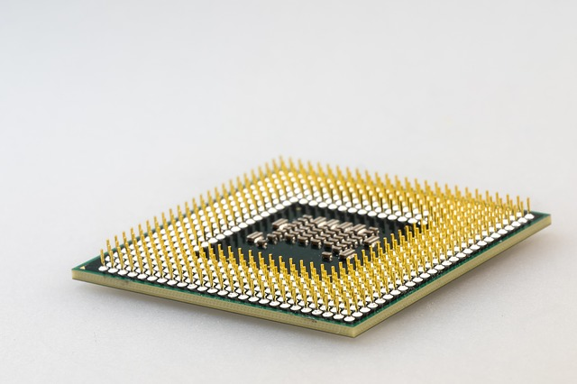

Covering applications, utilities and closed vs open source.
An application is a software program that provides some kind of interactive service to the person running it. They also provide and interface to interact with. Examples include Word Processors, Email clients, music players etc. A software program which runs in the background is not an application but a background process eg. a print spooler.
A utility is an application that has a very specific task to carry out related to the running of the system. They tend to be relatively small in terms of code. Examples of utilities include: Disk defragmenter - When new files are added they may not fit entirely into this free space. On these occasions, they are split across different areas of free space. A disk-defragmentation program groups all of the parts of each file together so they can be read in one go. Anti-virus programs – Virus are malicious programs, often designed to harm a computer system in some way and spread to others. Anti-virus software detects and removes viruses. Compression- Compression programs reduce the amount of space data takes up in storage. Often these algorithms make use of the fact that patterns of data are regularly repeated. File Managers – These allow files and directories to be moved, copied, deleted and renamed. Backup Utilities – These allow backups to be automatically made of specified data.
Three main sources: Off-the-shelf, Custom and Bespoke.
Off-the-shelf - (general purpose application) is the sort of software used at home or school. General purpose applications provide features for most people, for example, statistical functions, or mail merge. All of these extra features mean that off-the-shelf applications can get quite large. The reasons for using off-the-shelf applications: It is relatively cheap. It is easily available from most computer shops. It will have been thoroughly tested so there won’t be any serious problems or bugs. There tends to be extensive support eg. forums and books.
Bespoke or tailor made - Software which is designed for a very specific purpose, which is generally used only by one customer for whom it was created. Advantages: The company will get the exact software/system that they need. The software will work exactly how they want it to work. The software will only have the features that they specifically need in their business. Disadvantages: It takes a long time to develop such a system, between a few months to years. It costs a great deal of money to develop such a system. The company may need to employ a team of people such as business analysts, programmers, testers etc. There will be little in the way of user support and online help.
Open source software is software whose source code is freely available. It is free-to-use although there are usually licence conditions attached eg. attribution. Examples include LibreOffice, Thunderbird, Linux and Android. Advantages: Free to use. Can open most documents and files created by proprietary software (e.g. Microsoft Word). Fairly intuitive to learn, if you know how to use the Microsoft Office suite then you won’t have a problem using something like Open Office. If you have skilled programmers to hand, the source code can be adapted to suit your particular needs (that is what ‘open source’ means). Disadvantages: May not contain as many features as the equivalent commercial applications. May not have as much bug-fixing support and security patches as commercial versions. Not all of the software applications that you wish to use have an open source version available. Because industry and universities tend to use Microsoft Office, schools feel under pressure to stick to the ‘industry standard’ software.
Closed source software or proprietary software does not have freely available source code and usually requires a licence payment in order to use. Advantages: There is usually lots of online support and assistance. There are usually lots of regular updates. It is normally quite sophisticated. The best proprietary software is ‘industry standard’. Disadvantages: Expensive. It can’t be shared across networks (unless you have a license to do so). Advanced software can be difficult to use.